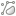

REN - Importar para o Modelo de Dados (GeoPackage)
Plugin QGIS · Ajuda e referência de funcionalidades
Visão Geral
O plugin REN - Importar para o Modelo de Dados foi desenvolvido para apoiar a produção e
validação da carta da Reserva Ecológica Nacional (REN) em conformidade com as normas técnicas da
DGT (Direção-Geral do Território), nomeadamente o Anexo III do regulamento que
define as boas práticas de representação cartográfica.
As principais funcionalidades são:
Importação de dados - carregar camadas de origens diversas (gpkg, PostgreSQL/PostGIS, shp, mpk, csv, (pasta).gdb) e
transferi-las para o GeoPackage modelo da REN, com mapeamento de campos e valores conforme o catálogo de
objetos (Anexo I).
Validação geométrica e temática - verificar a conformidade das camadas com o Anexo III,
detetando erros de geometria, sobreposições linha/polígono, nós pendentes, polígonos fora do limite concelho e
classificações incorretas.
O modelo de dados GeoPackage da REN contém as tabelas tip_p, tip_l e excl_p, com os campos obrigatórios definidos
pela DGT.
Barra de Ferramentas
Ícone
Função
Guardar
Guarda a configuração actual de mapeamento num ficheiro .json, para reutilização.
Carregar
Carrega uma configuração de mapeamento previamente guardada em .json.
Modelo
Descarrega um ficheiro pdm_modelo.zip (modelo GeoPackage vazio) para o local escolhido
pelo utilizador.
Versão
Verifica as versões do plugin e do modelo GeoPackage, quando disponíveis.
Ajuda
Abre/fecha este painel de ajuda.
Mapear
Mapear Automaticamente - o plugin compara os nomes das colunas da origem com os do modelo
usando um rácio de similaridade

Filtro geom
Filtro de tipo de geometria (p.ex. point / line / polygon).
Tabela
Abre a tabela de atributos da camada de origem selecionada.
Valores
Mostra os valores únicos do campo de origem selecionado (útil para mapear valores).
Adicionar camada
Adicionar camada ao mapa para visualização dos dados geográficos.
Separador: Configuração / Mapeamento
1. Selecionar o GeoPackage modelo
Clicar em Selecionar GeoPackage (Modelo) e escolher o ficheiro .gpkg
que serve de destino (modelo da REN). Se o ficheiro já estiver carregado como camada no QGIS, é detetado
automaticamente.
O plugin valida se o ficheiro tem permissões de escrita.
As tabelas disponíveis (tip_p, tip_l, excl_p) são listadas automaticamente.
2. Tabela de destino e DTCC
Selecionar a tabela de destino conforme o tipo de geometria a importar.
O campo DTCC (código de município) é preenchido automaticamente se existir no GeoPackage;
pode ser ajustado manualmente.
O botão Ver Catálogo (modelo) mostra os códigos e designações do catálogo,
atualizados em função da tabela selecionada.
3. Adicionar fontes de dados
Formato
Como carregar
.gpkg
Todas as camadas do GeoPackage são importadas de uma vez.
PostgreSQL
Ligação a base de dados PostGIS através de perfis de ligação configurados no QGIS.
.shp
Ficheiros Shapefile individuais.
.mpk
Pacote de mapas ArcGIS - o plugin procura shapefiles internos via GDAL VFS.
.csv
Texto delimitado por vírgula, carregado como camada de texto.
Pasta .gdb
File Geodatabase (ESRI) - usar o botão Adicionar pasta GDB.
Após carregar as fontes, a janela do plugin mantém-se em primeiro plano. As camadas carregadas
aparecem no grupo Tabelas Origem do painel de camadas do QGIS.
4. Mapeamento de campos
Existem três formas de mapear campos da origem para o modelo:
Mapear Automaticamente - o plugin compara os nomes das colunas da origem com os do modelo
usando um rácio de similaridade (por defeito 0,7). O resultado é registado no log.
Adicionar linha manualmente - clicar em Adicionar Linha e definir:
Coluna do Modelo -> Tabela de Origem -> Coluna
de Origem -> (opcional) Código (substituição). Se o Código (substituição) for
preenchido, esse valor será usado na importação.
Mapeamento de valores - quando a coluna de origem tem designações que correspondem a códigos
do catálogo, usar o botão Mapear na coluna Ações para associar cada valor de origem a
um código de destino. O botão Mapear Valores Automaticamente faz esta correspondência
por similaridade de texto.
Exemplo: se o valor de origem for "Espaços Centrais" e no catálogo existir
"Espaço Central", com rácio 0,7 a correspondência é aceite automaticamente.
5. Opções de importação
Separar geometrias múltiplas (Multipart -> Singlepart) - ao ativar esta opção, geometrias
multi-parte (MultiPolygon, MultiLineString) são decompostas em partes simples antes da inserção, garantindo
conformidade com o modelo. [Não utilizar na tabela 'excl_p']
Reparar geometrias inválidas (makeValid) - aplica automaticamente a função de reparação a
geometrias inválidas durante a importação.
6. Executar importação
Após configurar todos os mapeamentos, clicar em Executar Importação. O plugin valida
cada registo e insere os dados no GeoPackage de destino conforme o mapeamento.
Verificar que o GeoPackage não está aberto por outro processo antes de executar. A importação de
grandes volumes de dados pode demorar.
Filtrar por Tipo de Geometria
A tabela de mapeamento tem uma coluna Tipo de Geometria e um menu de filtro no cabeçalho que permite:
Mostrar todas as linhas.
Selecionar apenas linhas com um determinado tipo de geometria (p.ex. point / line / polygon).
As opções do filtro são atualizadas dinamicamente com base nos valores presentes na tabela de mapeamento e o estado do filtro é registado no log.
Guardar/Carregar Configuração
Guardar Configuração: cria um ficheiro JSON com o mapeamento actual (inclui caminhos das fontes, mapeamentos por linha, DTCC, planta e rácio de similaridade).
Carregar Configuração: importa um ficheiro JSON e tenta preencher a interface com as definições guardadas (avisa se a versão de configuração for diferente).
Separador: Validação (Anexo III)
Este separador reúne as ferramentas de validação da carta REN em conformidade com o Anexo III
das normas técnicas da DGT. As verificações são organizadas em três grupos:
Em todas as verificações, os resultados são apresentados no painel Resultados da validação no
fundo do separador, e as camadas de erros são criadas no grupo Tabelas Origem do QGIS.
Selecionar a camada a validar na lista Camada a validar antes de executar
qualquer verificação. A lista é atualizável com o botão .
Grupo: Geometria (GEOS - QGIS)
Verificar geometrias inválidas
Analisa todas as geometrias da camada selecionada usando dois motores em simultâneo:
GEOS (GEOSisValidDetail) - deteta auto-intersecções, auto-intersecções de anel, polígonos
não fechados.
Validador interno QGIS - deteta nós duplicados, anéis repetidos e outros problemas que o
GEOS considera válidos.
São criadas duas camadas de resultado:
INVALIDAS_* - cópia dos elementos inválidos com o campo motivo_erro
(descrição do erro).
ERROS_GEOM_* - pontos na localização exacta de cada erro, com etiqueta de descrição.
Esta verificação é equivalente ao algoritmo "Verificar validade" do QGIS Processing com
motor GEOS, mas adiciona também a deteção de nós duplicados.
Criar camada reparada em memória (makeValid) Em memória
Cria uma nova camada em memória com todas as geometrias da camada selecionada, aplicando
makeValid às que são inválidas. A camada de saída inclui os campos originais mais dois campos
adicionais:
geom_reparada - valor 1 se a geometria foi reparada, 0 se já era válida.
parte_num - número da parte (quando se usa a opção Singlepart).
A opção Separar Multipart -> Singlepart decompõe automaticamente geometrias multi-parte em
partes
simples, o que é necessário para conformidade com o modelo de dados da REN.
[Não utilizar na tabela 'excl_p']
Use esta ferramenta para corrigir geometrias antes de executar a importação. A camada resultante
pode ser usada diretamente como origem de dados.
Via Processing Processing
Reparar com makeValid - abre o algoritmo "Corrigir geometrias" do QGIS Processing
(native:fixgeometries).
Verificar validade - abre o algoritmo "Verificar validade"
(qgis:checkvalidity) com todas as opções de configuração do Processing.
Grupo: Representação (Anexo III)
Verificar nós pendentes (undershoots / overshoots)
Deteta extremidades de linhas que não tocam outro elemento da mesma camada:
Undershoot - a linha termina antes do ponto de ligação (ficou aquém).
Overshoot - a linha passa além do ponto de ligação (ficou além).
Cria a camada NOS_PENDENTES_* com um ponto em cada extremidade problemática e o campo
motivo com a classificação do erro.
Filtragem inteligente: extremidades que toquem no limite de polígonos da camada
de referência (ex: leito do tipo polígono) não são assinaladas como nós pendentes, evitando falsos positivos.
Via Processing Processing
Corrigir undershoots/overshoots (Snap) - abre "Ajustar geometrias à camada"
(native:snapgeometries) para corrigir as ligações em falta.
Separar linhas em intersecções - abre "Dividir com linhas"
(native:splitwithlines) para segmentar linhas nos pontos de cruzamento.
Verificar interrupção de linhas no limite de polígonos (Anexo III)
Verifica se as linhas da camada a validar penetram no interior de polígonos com os códigos
especificados, em conformidade com a boa prática do Anexo III:
"O
leito do curso de água do tipo linha é interrompido antes de intersetar o leito do curso de água do tipo
polígono."
Como configurar:
Selecionar a camada de linhas na lista principal (Camada a validar).
Selecionar a camada de polígonos de referência na lista Polígonos.
Escolher o campo de código dos polígonos (Código).
Introduzir os códigos a verificar no campo Códigos (separados por vírgula). Os
códigos relevantes da REN para este efeito são: 17, 18, 19, 21, 23, 24, 25, 27, 28, 33.
Clicar em Verificar.
São criadas duas camadas:
LINHAS_SOBREPOEM_POL_* - linhas completas que têm sobreposição (laranja), agrupadas
por código de polígono.
SOBREPOSICAO_LP_* - apenas a parte da linha que está dentro do polígono (vermelho
espesso), com marcadores nos vértices e círculo central para facilitar a identificação.
As linhas problemáticas são também selecionadas na camada original e a tabela de atributos da
camada SOBREPOSICAO_LP é aberta automaticamente.
Verificação de corte no limite do município (CAOP)
Verifica se os elementos da camada selecionada ultrapassam o limite do município, em
conformidade com o Anexo III:
"Quando os objetos têm continuidade além do limite administrativo, devem ser artificialmente fechados nos limites
da CAOP."
Como configurar:
Selecionar a camada CAOP (polígonos de limite administrativo) na lista Camada.
Selecionar o campo com o nome/código do município (Campo) - tipicamente
Dicofre (DTCC), Municipio ou Concelho.
Selecionar o município pretendido na lista Município.
Clicar em Verificar limite.
São criadas duas camadas:
FORA_LIMITE_* - elementos completos que cruzam o limite (laranja).
EXCESSO_CAOP_* - apenas a parte dos elementos que está fora do município (vermelho),
indicando exatamente o que deve ser cortado.
Grupo: Classificação (Anexo III)
Verificar código NULL / inválido (catálogo)
Deteta elementos cujo campo de código de classificação está nulo, vazio ou não presente no
catálogo de objetos carregado. Conforme o Anexo III, todos os polígonos devem estar classificados com
um código válido do catálogo (Anexo I).
O campo de código a verificar é selecionável na lista Campo do código de classificação
- tipicamente objeto_codigo.
Verificar polígonos adjacentes com mesma tipologia
Deteta polígonos que partilham fronteira e têm o mesmo código de
classificação. Segundo o Anexo III, estes devem ser fundidos, exceto quando a boa prática impõe
representações distintas (ex: Restingas/Barreiras, Ilhéus/Rochedos, Faixas de arriba).
Via Processing Processing
Fundir por código (Dissolve) - abre o algoritmo "Dissolver"
(native:dissolve) para fundir polígonos adjacentes com o mesmo código, usando o campo de
classificação selecionado.
Separador: Registo
O separador Registo (Log) apresenta todas as mensagens geradas pelo plugin com data e hora:
Resultados das verificações de validação (número de erros, camadas criadas).
Avisos de importação (campos não mapeados, geometrias reparadas, etc.).
Erros e exceções com detalhe técnico.
O botão Guardar Log exporta o conteúdo para um ficheiro .txt para
arquivo ou reporte técnico.
As mensagens de validação incluem linhas DEBUG quando relevante (ex: contagem de elementos
inseridos na camada de reparação). Estas linhas podem ser ignoradas em uso normal.
Resolução de Problemas (FAQ)
Não encontro as tabelas no GeoPackage: verificar se o ficheiro está carregado no QGIS ou
selecioná-lo manualmente com Selecionar GeoPackage (Modelo).
Ficheiro .mpk não carrega: verificar a instalação do GDAL e se o suporte VFS
(/vsi7z/) está ativo.
Erro ao escrever no GeoPackage: confirmar que o ficheiro não está em utilização por outro
processo e que tem permissões de escrita.
A janela do plugin vai para trás ao carregar dados: o plugin recupera automaticamente o foco
após o carregamento. Se o problema persistir, clicar na barra de título da janela do plugin.
Camada REPARADA tem menos elementos do esperado: verificar no log a linha [DEBUG
makeValid] - indica o número de elementos preparados e inseridos. Se divergirem, recarregar o plugin e
repetir.
A verificação de geometrias é lenta: o uso simultâneo dos dois validadores (GEOS + interno
QGIS) é mais lento que um só. Para camadas grandes, pode cancelar a qualquer momento pela barra de progresso.
Nós pendentes assinalados incorretamente: ativar a filtragem por polígonos - selecionar a
camada de polígonos de referência na lista da secção Linha/Polígono antes de verificar nós pendentes.
 Guardar
Guardar Versão
Versão Ajuda
Ajuda Mapear
Mapear Tabela
Tabela Valores
Valores Adicionar camada
Adicionar camada